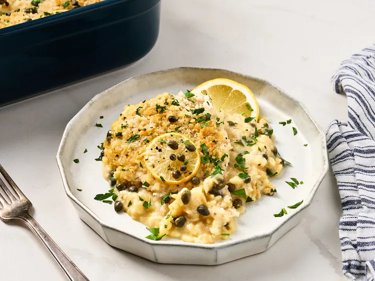

Chicken Piccata Orzo Casserole

Description
This easy chicken piccata orzo casserole is an easy one-dish dinner with lemone-garlic chicken atop creamy orzo. It takes minutes to assemble, and is on the table in under and hour.
Ingredients
- 1 can cram of chicken soup
- 1 cup chicken broth
- 1/4 cup lemon juice
- 1/4 cup capers
- 8 ounces orzo
- 2 pounds skinless, boneless chicken breast, sliced into cutlets
- 1 teaspoon garlic powder
- 1/2 teaspoon salt
- 1 teaspoon black pepper
- 1 cup grated parmesan cheese
- 3/4 cup panko bread crumbs
- 3 tablespoons butter
- 1 lemon, thinly sliced, plus more for garnish
- 2 tablespoons chopped parsley, or as needed for garnish
Steps
- Preheat the oven to 375 degrees F (190 degrees C).
- Combine cream of chicken soup, broth, lemon juice, and capers in a bowl
- Add uncooked orzo to a 9x13 inch baking dish. Pour chicken soup mixture over orzo and stir carefully to combine.
- Set chicken cutlets evenly on top of the orzo. Season with garlic, salt and pepper. Top with parmesan cheese, panko, butter, and lemon slices. Cover with foil.
- Bake in the preheated oven for 30 minutes. Remove foil; bake until the chicken is no longer pink at the center, juices run clear, and panko is golden brown, about 15 minutes more. An instant read thermometer inserted into the center of chicken should reach 165 degrees F (74 degrees C).
- Garnish with fresh parsley and sliced lemons.
Home